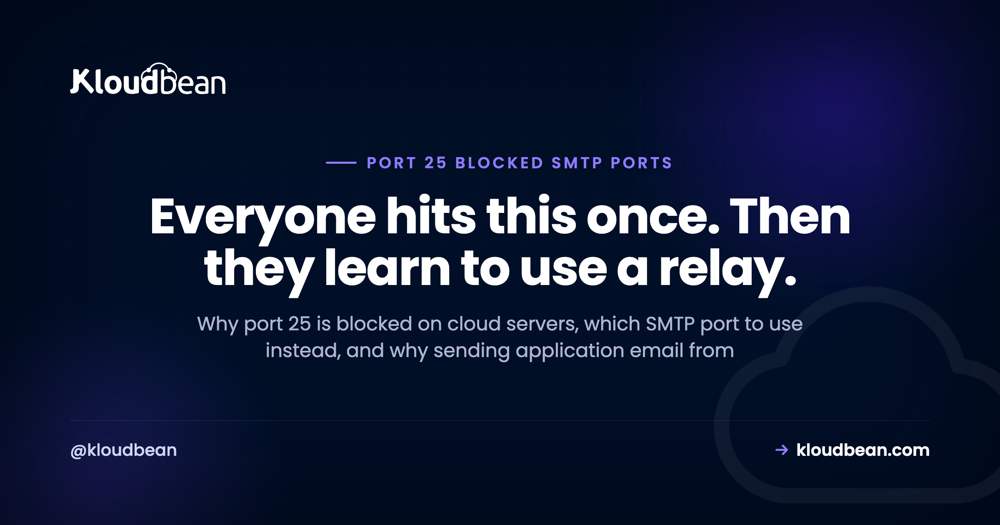

Port 25 Is Blocked on Your Cloud Server, and That Is Not a Bug

You deployed an application, it needs to send a password reset, and nothing arrives. No error you can see, or a timeout buried in a log. You test the connection and outbound port 25 simply hangs. This is not a misconfiguration and it is not something support forgot to enable. Every major cloud provider blocks outbound port 25 by default, deliberately, and getting it unblocked ranges from difficult to impossible depending on who you are with. The good news is that once you understand why, the correct architecture is obvious and takes about ten minutes to set up.
Cloud providers block outbound port 25 because a compromised server sending spam directly to the world damages the reputation of their entire IP range. Do not try to get it unblocked. Send through an authenticated relay on port 587 instead, using a transactional email service or your own mail provider. Port 25 is for server-to-server delivery between mail servers, 587 is for authenticated submission by applications, and 465 is an older implicit-TLS submission port that some providers still offer. Your application wants 587.
Confirm it in ten seconds
# Port 25 outbound: expect this to hang, then time out
nc -vz -w 5 smtp.gmail.com 25
# Port 587: this should connect
nc -vz -w 5 smtp.gmail.com 587
# Or with openssl, which also shows the greeting
openssl s_client -starttls smtp -connect smtp.gmail.com:587 -crlf 2>/dev/null | head -5A timeout on 25 and a successful connect on 587 is the whole diagnosis. Note the shape of the failure: a timeout rather than a refusal, because the block is a silent drop upstream rather than something on your server saying no. That distinction matters, since a refusal would point at your own firewall and a timeout points somewhere further out. It is the same reasoning that separates a refused connection from a dropped one elsewhere in the stack.
Also confirm nothing local is contributing:
sudo shorewall show rules 2>/dev/null | grep -E '\b25\b|smtp'
sudo iptables -L OUTPUT -n | grep -E '\b25\b'Why the block exists
Worth understanding because it explains why asking for an exception rarely works.
Port 25 is how mail servers talk to each other, and it requires no authentication by design, since a server accepting mail for its own users cannot demand credentials from every sender on the internet. That openness is exactly what spammers want. A compromised cloud instance with outbound 25 available can send directly to millions of recipients with nothing in the way.
The consequence lands on the provider rather than on the attacker. Mail receivers blocklist by IP address and often by range, so spam from one instance degrades deliverability for every other customer sharing that neighbourhood. Blocking outbound 25 by default is how providers protect the reputation of their address space, and it is genuinely in your interest even when it is inconvenient today.
Which is why the framing "how do I unblock port 25" is usually the wrong question. Even if you succeed, you have taken on running a mail server whose deliverability depends on the past behaviour of everyone who previously held your IP address.
Which port does what
| Port | Purpose | Encryption | Use it for |
|---|---|---|---|
| 25 | Server to server delivery | Opportunistic STARTTLS | Mail servers only. Blocked outbound on cloud. |
| 587 | Authenticated submission | STARTTLS | Your application. This is the one. |
| 465 | Submission, implicit TLS | TLS from connect | Fine if your provider prefers it |
| 2525 | Unofficial alternative | STARTTLS | Fallback some services offer |
| 110 / 143 / 993 / 995 | Reading mail (POP3, IMAP) | Varies | Not sending at all |
The 587 versus 465 question comes up constantly and matters less than people think. 587 uses STARTTLS, where the connection opens in plain text and is upgraded. 465 wraps the connection in TLS from the first byte. Both end up encrypted; 465 was deprecated then effectively reinstated, and plenty of providers support both. Use whichever your provider documents, and if both are offered, 587 is the more universally expected choice.
The right architecture: send through a relay
Your application should not be a mail server. It should hand messages to something whose entire job is delivering them, over an authenticated connection on 587.
What that buys you beyond working around the block: the relay maintains IP reputation as a full-time concern, handles bounces and complaint feedback loops, manages the authentication records receivers check, and gives you delivery logs so "did the reset email arrive" is a question with an answer.
Configuration is unremarkable, which is the point:
# Environment variables, never in code
SMTP_HOST=smtp.your-provider.com
SMTP_PORT=587
SMTP_USER=apikey-or-username
SMTP_PASS=the-secret
MAIL_FROM=noreply@example.com// Node with nodemailer
const transport = nodemailer.createTransport({
host: process.env.SMTP_HOST,
port: 587,
secure: false, // false for 587, STARTTLS is negotiated
requireTLS: true, // insist on the upgrade
auth: { user: process.env.SMTP_USER, pass: process.env.SMTP_PASS },
});secure: false with requireTLS: true confuses people and is correct. On 587 the connection genuinely does start unencrypted, so secure is false, and requireTLS makes the STARTTLS upgrade mandatory rather than optional. Without it, a failed upgrade can silently fall back to sending your credentials in plain text.
For WordPress, an SMTP plugin pointed at 587 with credentials in wp-config.php rather than the database is the equivalent. The default wp_mail behaviour tries to send directly from the server, which is exactly what the block prevents, and it is why "WordPress is not sending email" is so often this same problem wearing a different hat.
Keep credentials out of your repository. Environment variables done right covers separating them per environment, which matters here because a staging system sending real email to real customers is a memorable way to learn the lesson.
The three records that decide whether mail arrives
Getting a connection on 587 means your message left. Whether it lands in an inbox is a separate question, decided by DNS records you publish. Skipping these is the most common reason mail sends successfully and is never seen.
SPF lists who may send for your domain. One record only, so if you use several senders they go in the same one:
example.com. TXT "v=spf1 include:_spf.your-provider.com ~all"DKIM signs messages so receivers can verify they were not altered and genuinely came from an authorised sender. Your provider gives you the record to publish.
DMARC tells receivers what to do when SPF and DKIM fail, and asks for reports. Start permissive and tighten once the reports are clean:
_dmarc.example.com. TXT "v=DMARC1; p=none; rua=mailto:dmarc@example.com"Then verify what is actually published rather than what you intended:
dig +short TXT example.com | grep spf
dig +short TXT _dmarc.example.com
dig +short TXT selector._domainkey.example.comTwo mistakes worth naming. Publishing two SPF records invalidates both, which is easy to do when a second sending service is added by a different person. And moving p=none straight to p=reject before checking reports will start bouncing legitimate mail from senders you forgot about, such as your CRM or invoicing tool. Read the reports first.
Should you ever run your own mail server?
A clear opinion, because a lot of time gets lost here.
For sending application email, no. Not because it is technically difficult, since installing Postfix is an afternoon, but because deliverability is a reputation problem rather than a configuration problem. A new cloud IP address has no sending history, may carry the residue of whoever held it before, and major receivers are cautious with unknown senders. You can do everything correctly and still land in spam for weeks. A relay exists precisely because someone else has already solved that and keeps solving it.
Receiving mail for a domain is a different question with a more reasonable answer, though the operational surface is real: spam filtering, storage, backups, and security patching for a service that is permanently exposed. Most teams are better served by a hosted mailbox provider and should spend the attention on their product.
The case for running your own is narrower than people assume: a specific compliance requirement about where mail is stored, genuinely enormous volume, or mail handling that is itself the product. If none of those describe you, use a relay and move on.
| Symptom | Cause | Fix |
|---|---|---|
| Connection to 25 times out | Provider blocks outbound 25 | Use 587 with a relay |
| Connection to 25 is refused | Local firewall, not the provider | Check your own rules |
| 587 connects, mail still not delivered | Missing SPF, DKIM, or DMARC | Publish and verify the records |
| Mail arrives in spam | Reputation or authentication | Check DMARC reports |
| Legitimate mail started bouncing | p=reject set too early | Return to p=none, read reports |
| Works locally, fails deployed | Credentials not set in that environment | Check deployed variables |
| Authentication fails on 587 | Wrong port and TLS mode pairing | 587 with STARTTLS, or 465 with implicit TLS |
| WordPress sends nothing at all | Default direct sending, blocked | Configure SMTP on 587 |
What has to be true of your host
Being straightforward about this one: the port 25 block is a cloud provider policy, and since Kloudbean runs your servers on AWS, Lightsail, Google Cloud, Linode, Vultr, DigitalOcean, or UpCloud, that policy is the underlying provider's rather than something a management layer overrides. Any host telling you otherwise is either running its own data centre or being imprecise.
What is genuinely useful here is the surrounding setup. Servers come with Shorewall configured, so outbound submission on 587 works without you building firewall rules. Environment variables are managed per application in the dashboard, which keeps SMTP credentials out of your repository and stops staging from mailing production customers. And because you have SSH access, the diagnostic commands above are available rather than being something you file a ticket about.
The honest boundary: nobody can unblock port 25 on your behalf, and no host can repair sender reputation. Use a relay on 587, publish your three DNS records, and this stops being a problem you think about.

If mail is still your problem
If the service you are sending through is Microsoft 365, its settings and the retirement of password-based SMTP AUTH are covered in Office 365 SMTP settings. For keeping credentials separated, environment variables done right. On the DNS records above, DNS explained. For the refused-versus-dropped distinction used in the diagnosis, error 521. On sending mail from queued background work rather than inside a web request, background jobs with BullMQ. When an outbound call has no timeout and stalls a request, 504 Gateway Timeout. And for the WordPress side, managed WordPress hosting.
Own the server. Skip the server admin.
Servers, managed databases, object storage, and a built-in load balancer live behind one login, on the cloud and region you pick. The stack, SSL, patching, and backups are handled for you.
- ✓ Seven cloud providers
- ✓ Managed databases
- ✓ Object storage
- ✓ Automatic backups
- ✓ Free SSL
- ✓ Git deploy
- ✓ Free migration assistance
Plans from $8/mo · Free migration assistance · Free trial
FAQ
Why is port 25 blocked on my cloud server?
Because port 25 requires no authentication by design, so a compromised instance can send spam directly to millions of recipients. Mail receivers blocklist by IP address and often by range, meaning one abusive server damages deliverability for every other customer nearby. Providers block outbound 25 by default to protect the reputation of their address space.
Which SMTP port should my application use?
587, with an authenticated relay. Port 25 is for server-to-server delivery between mail servers and is blocked outbound on cloud platforms. 587 is the submission port intended for applications sending through a provider, and 465 is an older implicit-TLS submission port that many providers still accept. Your application wants 587.
What is the difference between port 587 and 465?
587 opens in plain text and upgrades to encryption with STARTTLS, while 465 wraps the connection in TLS from the first byte. Both end up encrypted and the practical difference is small. Use whichever your provider documents; if both are available, 587 is the more widely expected choice.
Can I get port 25 unblocked?
Sometimes, depending on the provider and your account history, and it is usually the wrong goal. Even unblocked, you have taken on running a mail server whose deliverability depends on the reputation of an IP address you did not choose and may share a history with. A relay on 587 solves the actual problem in minutes.
How do I test whether port 25 is blocked?
Run nc -vz -w 5 smtp.gmail.com 25 and then the same against 587. A timeout on 25 with a successful connect on 587 confirms the provider block. The timeout rather than a refusal is itself informative, since a refusal would suggest your own firewall while a silent drop points upstream.
My mail sends successfully but never arrives. Why?
Connecting on 587 only means the message left your server. Delivery is decided by SPF, DKIM, and DMARC records published in your DNS, and missing or incorrect records are the most common reason mail is accepted then discarded. Verify what is actually published with dig rather than trusting what you meant to publish.
Should I run my own mail server?
For sending application email, no. The difficulty is not installation but reputation: a new cloud IP has no sending history and may inherit a poor one, so you can configure everything correctly and still land in spam for weeks. Relays exist because somebody else already solved that and keeps solving it. Receiving mail is a more reasonable case, though a hosted mailbox provider is still the better use of your attention for most teams.
Why does WordPress send no email at all?
Because the default behaviour tries to send directly from the server, which the port 25 block prevents. Configure an SMTP plugin to use an authenticated relay on 587 and keep the credentials in wp-config.php or environment variables rather than the database. This is the same problem as the one above, wearing a WordPress hat.